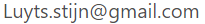

naam: Stijn Luyts
profiel: Netwerk beheerder
Email: 
Telefoon: +32 494 72 11 25
Skill
Windows server management 80%Wie ben ik
Ik ben Stijn Luyts uit Kasterlee.
Tijdens mijn oplijding logistieke assistent in het middelbaar was ik aan het na denken wat ik wilde doen als ik afgestudeerde was.
Ik had toen twee opties, gaan werken met mijn diploma of gaan verderstuderen in een hogere school.
Na wat zoeken had ik besloten om IT te gaan studeren in de Thomas More in Geel.
Hiervoor ging ik eerst Systeem- en Netwerkbeheer in Graduaat volgen om daarna een bachelors oplijding van IT te volgen.
Na mijn stage bij CISA wist ik dat ik in de bachelors oplijding Cloud & Cybersecurity wilde volgen om zo later bij defencie te gaan werken al een Cybersecurity specalist te gaan werken
Projecten
Hier vind u een paar projecten die ik tijdans mijn oplijdingen in de IT heb uitgewerken.
project SE&A
Voor het vak Systems Engineering & Analysis moesten we een proof of concept maken voor een Klant. De klant wilde op een manier een zone afbaken voor waar de kinderen mochten in spellen en als een kind de zone verlate dat ze een alarm kreeg.
Dus heb ik een mijn groep een proof of concept gemaakt voor deze klant om aan te tonen dat het mogelijk is om te maken. Tijdens de project week heb ik mij vooral gefocust op de website een ook de communicatie tussen de website en de firebase database. Maar ik heb ook geholpen met opzoek werk waneer dit nodig was.
Op het einde van deze projectweek moest onze groep onze proof of concept aan onze klant tonen en zeggen wat we hebben gerealiseerd. Dit deden we aan de hand van een demo dat we hadden gemaakt tijdens onze project week.
In dit project heb ik geleerd hoe je in een team moet werken en hoe je taakverantwoordelijkheid moet nemen in een team. Ook heb ik geleerd hoe je moet communiceren met een klant en hoe je een klant kan overtuigen om voor jouw product te kiezen.
zabbix migratie
Als mijn stage project bij CISA heb ik de Zabbix monitoring systemen gemigreerd. Dit moest gedaan worden omdat de monitoring systeme nog op een oudere versie loopte.
Ik moest dit project zelf in de handen nemen een lijden.
Eerst moest ik bij de klanten van CISA een zabbix proxy op zetten en deze configureren met een ip address, hostname en ik moest zorgen dat hij naar de proxy van CISA kon gaan.
Hiervoor moest ik in de firewall een regel aanmaken dat de proxy kon communiseren met de proxy bij CISA op een bepaalde poort.
En dan moest ik in alle servers die gemonitord moeten worden de configuratie aanpassen om te zorgen dat ze de nieuwe proxy gebruikte.
Ik heb geleerd hoe je een plan van aanpak maakt en hoe je ordelijk te werk gaat en goed documenteerd.

Minecraft server hosten op devops manier
Voor het vak DevOps moesten we een project maken op de DevOps manier. We mochten hier voor zelf een project kiezen en hier moesten wij een business plan voor maken.
Onze groep had gekozen om een minecraft server te bouwen waar kinderen van coderdoje van belgie konden op spelen. Ik Stond in voor het deployen van alle nodige OS systemen en het opbouwen van de minecraft server zelf.
Bij deze project heb ik geleerd hoe belangrijk het is om een goede taak vedeeling te hebben. Een goede taak verdeeling zorgt ervoor dat iedereen weet wat hij moet doen en kan zo ook zien waar hij kan helpen als hij klaar is met zijn taak.

Netwerk opstelling rusthuis
Voor mijn alle eerste projectweek moesten wij een concept maken van een moderne rusthuis. Hiervoor moesten we zorgen dat iedereen goede wifi had en dat iedereen kon chrome casten. Ook moesten we een concept maken met switches en routers.
Ik stond in voor het concept op te bouwen, hiervoor ging ik gebruik maken van 3 routers en 5 switches om te simuleren hoe het op een grotere schaal kon opgebouwd zijn. Hiervoor hadden we gerekent dat elke kamer en eigen subnet kreeg met 8 vrijen ip adressen en de wifi ging dan in één grote subnet zitten. Hierdoor kon elke kamer een eige chromecaste hebben zonder dat andere mensen er zo maar aan konden.
Hier hij heb ik geleerd hoe je een netwek opstelt op een grotere schaal, want tot dat moment hadden we altijd gewerkt met 1 router en 2 switches. Maar door deze project had ik de mogelijkheid om het groter beeld te zie.

Stijn, we hebben jou als stagiair zien ontplooien van een aftastend, teruggetrokken student tot een geëngageerde betrokken collega. Jouw technische en analytische vaardigheden zijn sterk! Eens je een workflow hebt kunnen doorgronden, dan ben je in staat om daar autonoom en gedreven op door te zetten met coaching. In je stage bij CISA heb je een mooie bijdrage geleverd in de Zabbix upgrade!
Je taal en sociale vaardigheden dienen in een vertrouwensvolle context te kunnen ontplooien. In de groepsdynamiek hebben we Stijn opgemerkt, je confortzone heb je volledig bereikt.
Ik ben ook héél positief over de evolutie van je persoonlijke website! Jouw verdere evolutie en toekomst liggen duidelijk in het IT-gebeuren. Je hebt daar alle potentieel toe!

"Aangename stagiair met een diepgaande netwerk-kennis. Ik heb je over de laatste 3 maanden zien openbloeien en zowel op sociaal als kennis-gebied.
Veel succes met de toekomstplannen!"